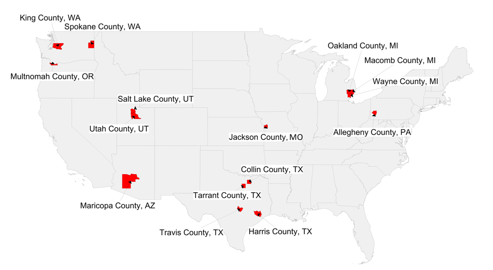
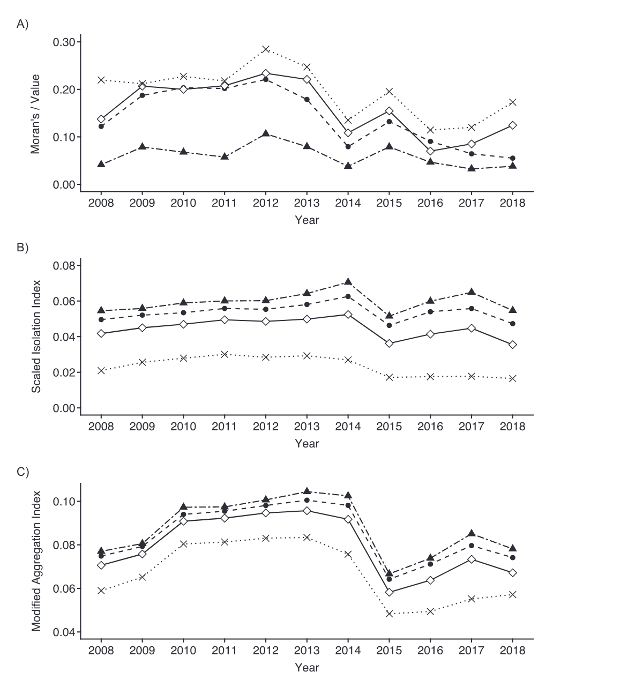
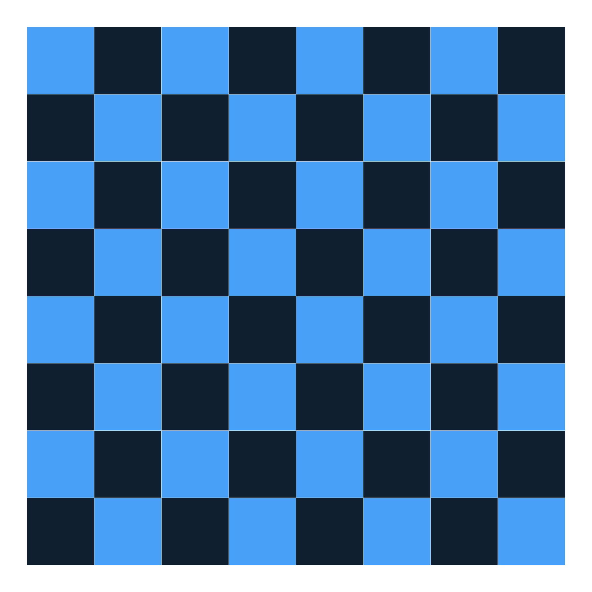
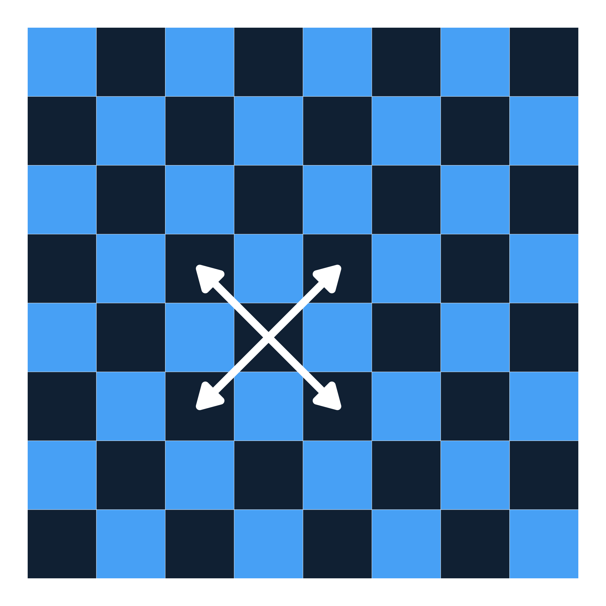

Measuring the spatial clustering of non-vaccination and its implications for population health
EPID 684
Spatial Epidemiology
3/17/2022
Jon Zelner
jzelner@umich.edu
epibayes.io
Today’s Theme

Measuring and understanding the public health implications of spatially clustered susceptibility through the lens of vaccine 💉 hesitancy.
Agenda
- Characterizing spatial heterogeneity and clustering of non-vaccination in the U.S.
- Introduction to Moran’s I and the concept of spatial neighbor weighting.
- Comparing conclusions drawn by using isolation,
Some questions about Olive et al.
- What might explain the increase in spatial clustering of non-medical exemptions to pediatric vaccination over time?
- What are the public health implications of this kind of spatially-clustered susceptibility to infections like measles?
- How could this information be used to prevent outbreaks?
- What do you think might be limitaitons of a spatially focused approach to the problem of vaccine hesitancy?
A new metric has entered the arena!

Clustering measures over time and across scales, from Masters et al. 2021.
Bringing space into clustering metrics

First, we have to decide who are neighbors are!
What is a spatial neighbor?
- A spatial area that is related to the one of interest.
- Areas that are touching are called contiguity neighbors.
- But: Contiguity is not a necessary or sufficient condition for two places to be neighbors.
- How else could neighbors/neighborhoods defined?
Contiguity neighbors are defined in terms of chess moves.

Areas sharing a border have Rook’s contiguity

But what about the corners?

Areas sharing at least a single vertex have Queen’s contiguity

We can translate these into spatial weights
- These represent the strength of spatial interaction
- Simplest is to assign \(w_{ij} = 1\) for neighbors and \(w_{ij} = 0\) otherwise.
- Weights can vary with distance and other attributes, such as travel time.
Choice of weights has to be motivated by theory
- Selected weights should reflect our understanding of the underlying spatial process at work.
- This could include social factors, biological features of the disease of interest, environmental factors, etc.
- Necessary to look at multiple ways of specifying weights to see if your outcomes are robust to different definitions.
What is Moran’s I?
- A measure of spatial autocorrelation in outcomes between areas.
- A measure of global clustering.
- Takes values from -1 to 1
- A very commonly used (and misused) measure of spatial clustering
What does it measure?
- Negative values of I indicate that neighboring areas are more likely to be dissimilar to each other than non-neighboring ones.
- Positive values indicate that neighboring values are more likely to be similar to each other.
- Can accomodate a range of ways of calculating values and distances, but here we’ll stick to something simple.
How is it calculated?
\[
I = \frac{N}{W} \frac{\sum_{i} \sum_{j} w_{ij} (x_i - \bar{x})(x_j - \bar{x})}{\sum_{i}(x_i \bar{x})^2}
\]
Where:
- N is the number of spatial areas.
- W is the sum of all the spatial
- \(x_i\) and \(x_j\) are the values of the i-th and j-th cells
- \(w_{ij}\) indicates whether i & j are neighbors (yes = 1, no = 0 )
- \(w_ij = 0\) when \(i = j\)
- \(\bar{x}\) is the mean value of x across all squares
In words, please?
\[
I = \frac{N}{W} \frac{\sum_{i} \sum_{j} w_{ij} (x_i - \bar{x})(x_j - \bar{x})}{\sum_{i}(x_i \bar{x})^2}
\]
How far is the product of the difference from the population mean of \(x_i\) values in neighboring squares from the average distance from the mean for all squares?
Let’s start by looking at how this works using Rook’s contiguity
As close as you can get to -1

As clustered as you can get \(\to\) 1

Randomly distributed \(\approx\) 0

Randomly distributed \(\approx\) 0

How does the choice of weights impact this?
Let’s try with Queen’s contiguity!
Different weights \(\to\) A different result…
What can we learn with this?
- Understand whether the distribution of a disease across areas is clustered.
- Sensitive to the choice of weights, shape of spatial units, and on and on…
- Still a global measure, i.e. says something about the average, but may obscure more local patterns.
Focusing in on non-vaccination risks in Michigan
- What do you think the most important takeaway from Masters et al. is?
- How does our choice of measure impact the conclusions we draw over time ?
- Why do you think aggregating data across spatial scales can have such a strong impact on our measures?
- What are some of the potential practical implications of the error that comes from this kind of aggregation?
Next Time
- Looking at what happens when we try to target spatially clustered non-vaccination: A case study from Michigan
- Discussing the Thiel index approach to clustering and segregation
- Actually doing the hands-on!